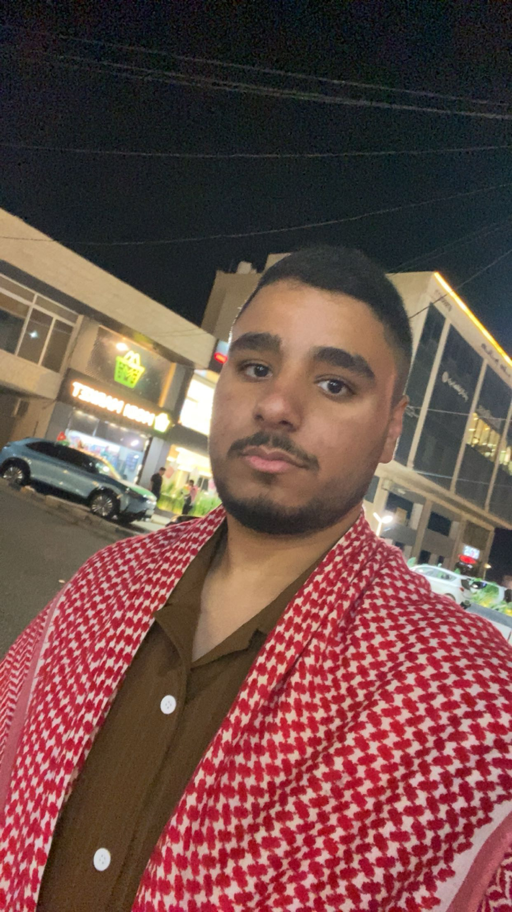

Major: software engineering
Academic Level: Fourth Year

| Name | Type | Link |
|---|---|---|
| Python | Programming Language | python.org |
| C++ | Programming Language | isocpp.org |
| Git | Version Control Tool | git-scm.com |
| Jira | Project Management Tool | atlassian.com |
In four years, I see myself working as a full-stack software engineer focusing on building scalable web applications. I want to improve my skills in agile project management and software architecture. I also plan to master modern development tools like Docker and to build efficient systems. In addition, I hope to pursue postgraduate studies in software engineering. My main goal is to contribute to innovative tech solutions in Jordan and globally.